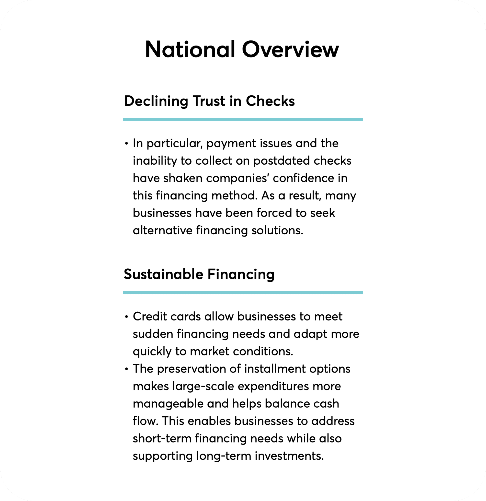
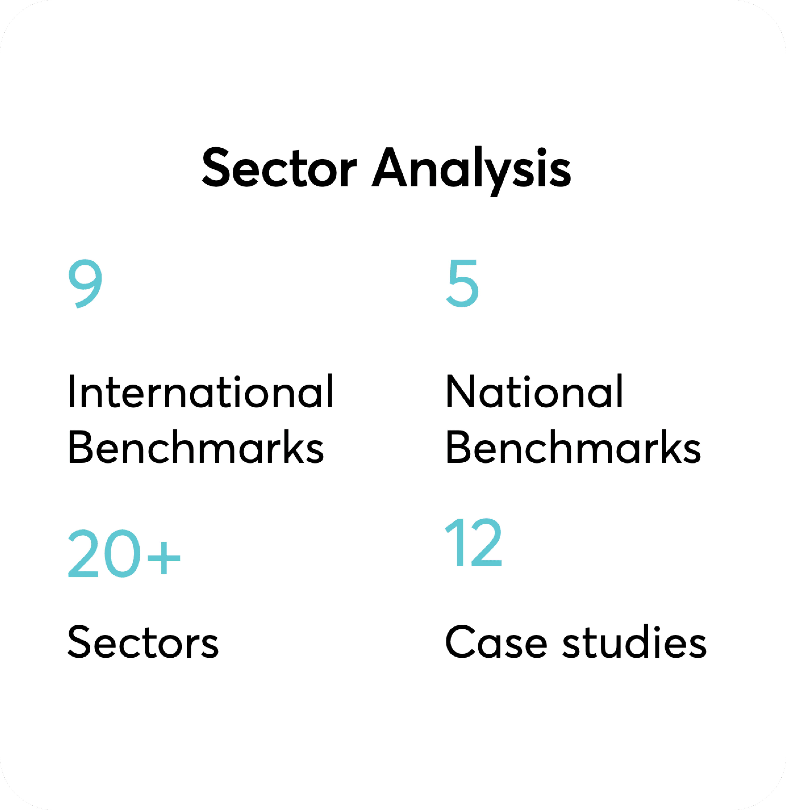
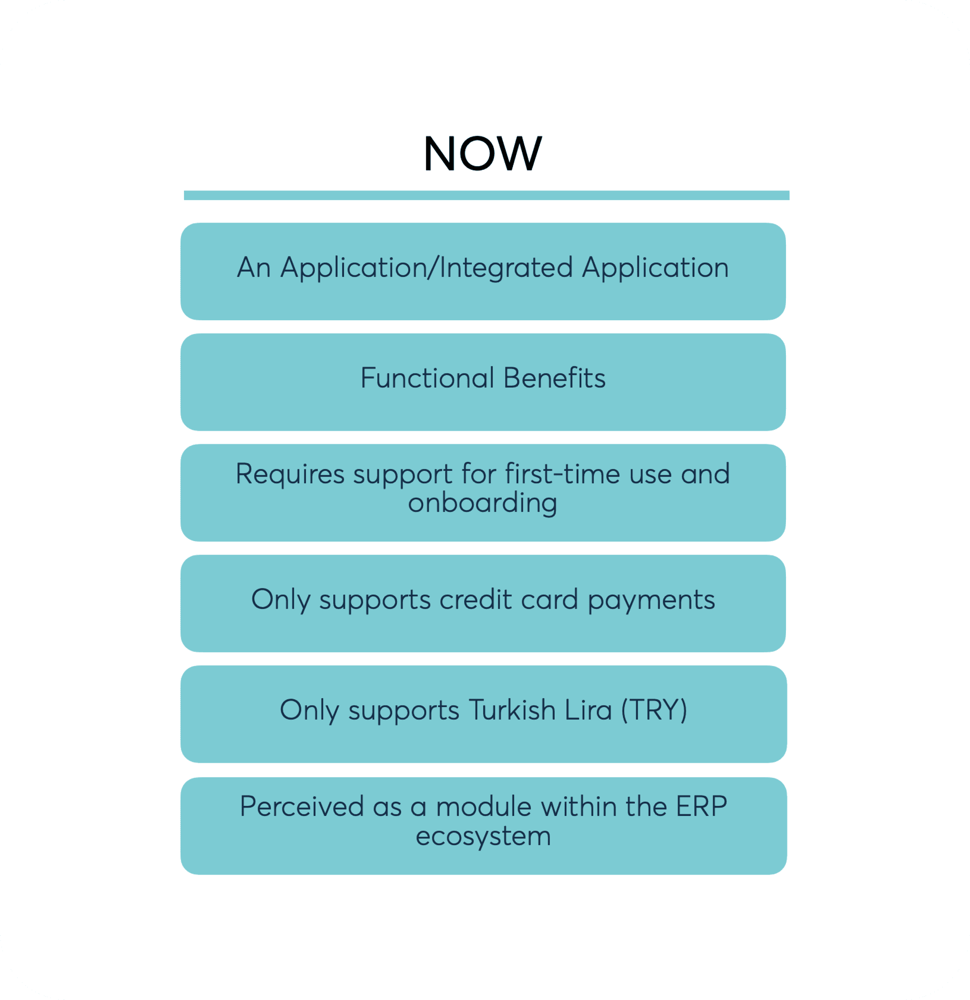

eLogo: Strategic Decoupling & B2B Payment Gateway Architecture
How extensive discovery across 20+ enterprise sectors, 14 national and international benchmarks, and decoupling from legacy ERP transformed Logo Yazılım's e-collection product into a high-scale standalone B2B payment gateway.
Role & Mandate: Lead Product Strategist & Enterprise Information Architect (via ting / eLogo), partnering directly with Logo Yazılım executive leadership, product managers, and enterprise chamber of commerce stakeholders.
The Problem: Turkish B2B commerce historically depended on post-dated physical checks (vadeli çek), creating massive default risks and cash-flow freezes during macroeconomic crunches. Logo Yazılım (100k+ enterprise clients) owned an e-collection feature, but it was trapped as an obscure, friction-heavy desktop sub-module inside their monolithic ERP. It lacked multi-currency support, zero-login link payments, and self-serve onboarding.
The Solution: Led an exhaustive discovery initiative auditing 20+ vertical industries (automotive, pharma, construction, FMCG) and 14 payment gateways (Stripe, Adyen, İyzico). Architected the strategic blueprint to decouple e-collection from ERP desktop confines into a standalone cloud payment gateway endorsed as "Powered by eLogo", featuring instant payment links, multi-currency virtual POS settlement, and bi-directional ERP ledger automation.
Audited Business Impact: Reduced manual accounting workload by 85% through real-time GL reconciliation, unlocked zero-touch merchant onboarding, and positioned Logo to capture over 140% annual market growth in B2B credit card installment financing.

01 · The Macro Crisis: Declining Trust in Post-Dated Checks
For decades, the lifeblood of Turkish B2B commerce—from automotive aftermarket distributors and construction material suppliers to pharmaceutical wholesalers—operated on post-dated physical checks (vadeli çek). In this financing model, buyers issued checks maturing 30, 60, or 90 days out, functioning as informal working capital loans between private enterprises.
However, tightening monetary policy, inflationary pressures, and rising default rates caused a systemic collapse in check credibility:
- Default & Dishonor Risk: Unfunded check returns created cascading liquidity crises across distributor and dealer networks.
- Cash Flow Rigidity: Suppliers were forced to wait until exact check maturity dates or accept steep bank factoring discounts to access cash.
- Operational Friction: Finance teams dedicated hundreds of man-hours to logging physical check slips, courier tracking, and manual bank branch clearing.

02 · The Discovery Engine: Auditing 20+ Enterprise Sectors & 14 Benchmarks
To build a solution anchored in verifiable commercial realities rather than theoretical assumptions, I designed and executed a multi-layered discovery research methodology spanning the full Turkish industrial and financial landscape:
| Discovery Stream | Sample & Entities Audited | Primary Strategic Findings & Invariants |
|---|---|---|
| 20+ Enterprise Sectors | Automotive (OSS), Construction (TİMSAD), Pharma (TİSD), Food (TGDF), Tourism (TÜRSAB), Packaging, Machinery | Each sector operated bespoke collection dynamics: automotive required sub-dealer commission splitting; construction demanded milestone-based link collections; pharma required rigid tax ID batch validations. |
| 14 FinTech Benchmarks | 9 Global: Stripe, Adyen, Square, Checkout.com, Mollie, Braintree, Payoneer, Klarna, Authorize.Net 5 National: İyzico, PayTR, Param, Ozan, Moka |
Global benchmarks prioritized developer APIs and friction-free payment links. National gateways focused on Turkish bank loyalty installment schemes (Bonus, World, Axess, Maximum) but lacked ERP back-office integration. |
| 12 Case Studies & Field Audits | In-depth interviews with Enterprise CFOs, Collection Managers, Dealer Chiefs, and Head Accountants | Merchants rejected complex buyer portals that required their B2B customers to register or remember passwords. The overwhelming requirement was "Pay via Link" with zero friction. |

03 · Transformation Matrix: Decoupling from Monolithic ERP
At the project outset, eLogo E-Tahsilat suffered from product trapping: it was designed and packaged merely as an internal feature of Logo Tiger and GO desktop ERP software. This created severe artificial limitations that throttled commercial adoption.
I mapped the structural divergence between the legacy baseline and the proposed target architecture:
| Architecture Dimension | NOW · Legacy ERP Add-On | FUTURE · Standalone B2B Gateway |
|---|---|---|
| Product Boundary | Restricted desktop add-on inside Logo ERP. Inaccessible to non-Logo software users. | Standalone cloud web application accessible from any browser, device, or third-party ERP. |
| Value Proposition | Purely functional payment transaction logging. Zero emotional or brand resonance. | Comprehensive cash flow acceleration partner providing functional efficiency and executive peace of mind. |
| Onboarding & Setup | Multi-week manual onboarding requiring dedicated ERP consultants and IT engineers. | Self-serve digital onboarding enabling first collection within minutes of registration. |
| Payment Modalities | Basic credit card POS terminal emulation only. No alternative payment channels. | Multi-rail orchestration: Link, SMS, QR, recurring subscriptions, and direct bank debit. |
| Currency & FX | Turkish Lira (TRY) only. Exporters and importers completely excluded. | Multi-currency support (TRY, USD, EUR, GBP) with real-time FX rate conversion. |
| Brand Positioning | Perceived as an obscure backend utility buried in ERP menus. | Independent flagship FinTech brand endorsed with "Powered by eLogo" authority. |

04 · The Strategic Three-Pillar Engine: Brand, Platform & Channels
To execute this transformation without losing Logo Yazılım’s core advantage (a 40-year enterprise footprint across 100,000+ businesses), I formulated a comprehensive Three-Pillar Strategic Framework:
Pillar 1: Brand Architecture & The "Powered by eLogo" Strategy
Should the product be renamed completely or remain under the Logo umbrella? I designed a dual-tiered brand endorsement model: position the product externally as a sleek, modern payment gateway while retaining the "Powered by eLogo" stamp. This captured the best of both worlds: modern FinTech agility paired with institutional enterprise trust.
Pillar 2: Platform Experience & Progressive Disclosure
Enterprise accounting software is notorious for cognitive overload. I overhauled the user interface with strict progressive disclosure:
- Collect via Link in 3 Clicks: Merchants enter buyer mobile number, amount, and invoice reference—generating an encrypted instant payment link dispatched via SMS and WhatsApp.
- Automated Bank Reconciliation: Replaced manual ledger entry with bi-directional webhooks that auto-match bank payments to outstanding ERP sales orders.
- Dealer Commission Splitting: Enabled parent manufacturers to distribute installment payouts automatically between central headquarters and local regional dealers.
Pillar 3: Channel Enablement & Ecosystem Distribution
Product success in enterprise B2B requires commercial channel alignment. We activated Logo’s network of hundreds of authorized business partners (İş Ortakları):
- Dealer Referral Incentives: Provided recurring revenue share for ERP consultants who activate e-collection across their merchant accounts.
- Chamber of Commerce Toolkits: Packaged sector-specific playbooks tailored for automotive, construction, and textile trade associations.
- Zero-Risk Sandbox Environment: Developed instant interactive demo instances allowing prospective merchants to test virtual POS collection flows in 60 seconds.

05 · Audited Operational ROI & Market Impact
The strategic repositioning and architectural definition of eLogo transformed an uncelebrated ERP feature into a high-growth FinTech growth driver:
Bi-directional ERP sync auto-reconciled bank payments directly into Logo Tiger and GO general ledgers with zero manual Excel entry.
Positioned eLogo to capture the exponential shift from unbacked physical checks to digital B2B credit card installment financing.
Slashed merchant onboarding from multiple weeks of manual IT consultation to a self-serve digital workflow completed in minutes.
Standardized tailored collection playbooks across automotive, construction, pharma, food, and hospitality trade associations.